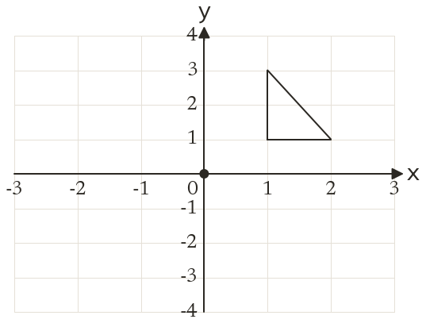
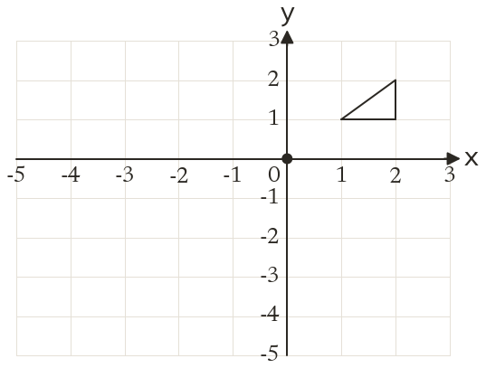
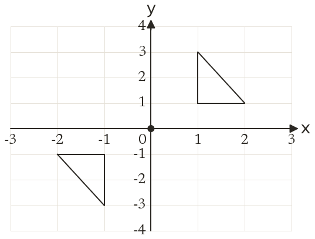
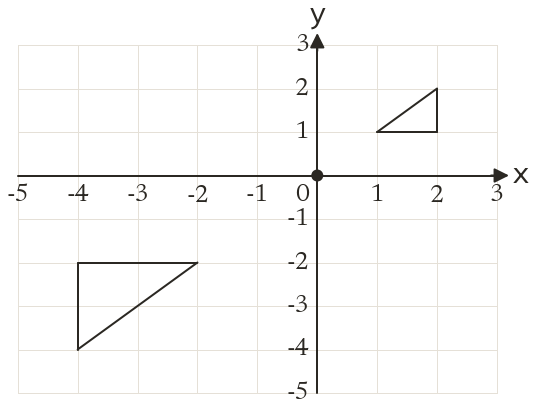

Westonbirt Maths · Transformations
Fractional and Negative Enlargements
Name: ______________________ Date: ____________
1
Enlarge the triangle by scale factor -1, centre (0, 0).
2
Enlarge the triangle by scale factor -2, centre (0, 0).
3
Enlarge the point (3, 2) by scale factor -3, centre (0, 0).
4
Enlarge the point (5, 3) by scale factor -12, centre (1, 1).
5
Which single transformation is the same as an enlargement by scale factor -1?
Ext
Enlarge the point (4, 5) by scale factor -2, centre (2, 3).



